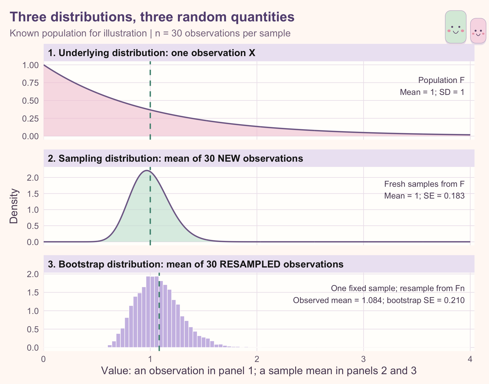
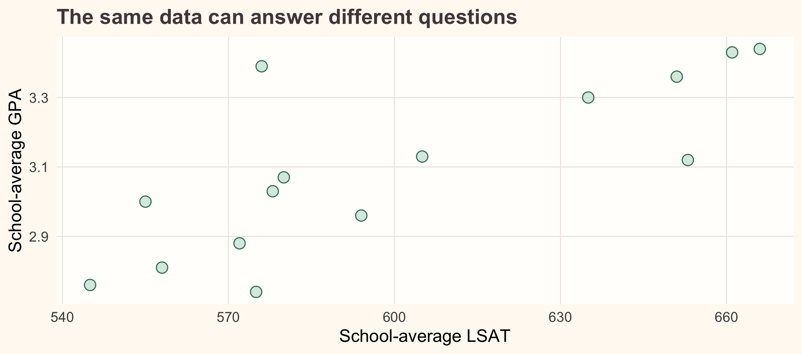
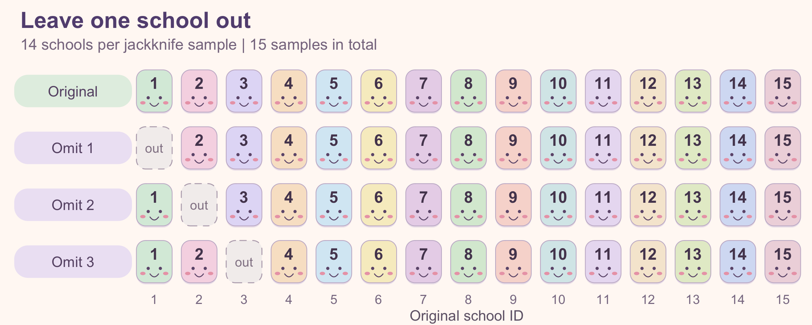

7 Jackknife and Bootstrap
How much would an estimate change if we collected another sample? Jackknife and bootstrap use the observed data to estimate its sampling uncertainty. We study both methods using one dataset, then compare their SE and bias estimates. Prediction assessment belongs to Chapter 6; this chapter focuses on the accuracy of an estimated parameter.
By the end, you should be able to construct both kinds of resamples, calculate their SE and bias estimates with the correct formulas, and interpret a bootstrap percentile interval. The core lesson ends at Summary; derivations and additional intervals are in Supplementary.
7.1 Three Distributions and Sampling Uncertainty
Let \(D=(X_1,\ldots,X_n)\) be an independent sample from a population distribution \(F\). A parameter \(\theta\) describes the population; an estimator \(\hat\theta=T(D)\) is a rule calculated from the sample. Once we observe \(D\), it gives one numerical estimate.
The sampling distribution is the distribution of \(\hat\theta\) across repeated samples of size \(n\) from \(F\).
\[ \operatorname{SE}(\hat\theta)=\sqrt{\operatorname{Var}_F(\hat\theta)}, \qquad \operatorname{Bias}(\hat\theta)=\mathbb E_F(\hat\theta)-\theta. \]
SE measures spread; bias measures average displacement from the true parameter. Both concern repeated samples, not the spread of the individual observations.
- Underlying distribution \(F\): the population distribution of one observation \(X\). A fresh sample contains \(n\) independent draws from \(F\).
- Sampling distribution of \(\hat\theta\): the distribution of \(T(D)\) across fresh samples of size \(n\) from \(F\). It depends on \(F\), \(n\), and \(T\); its SD is the estimator’s SE.
- Bootstrap distribution of \(\hat\theta^*\): the conditional distribution of \(T(D^*)\) given one fixed observed sample \(D\). Draw \(n\) rows with replacement from \(F_n\) to form each \(D^*\). Under suitable conditions, this approximates the sampling distribution.
The first describes individual data values; the others describe estimates from entire samples. Population sampling changes \(D\); bootstrap sampling fixes \(D\) and changes \(D^*\).
7.1.1 See the Difference with a Known Population
For this illustration only, let \(X\sim\operatorname{Exp}(1)\) and estimate \(\mu=1\) using the mean of \(n=30\) observations. The first two curves are known: an exponential density for \(X\), and the exact sampling density of \(\bar X\) (a gamma density with shape 30 and rate 30). The last panel uses 5,000 bootstrap means from one observed sample of size 30.
The individual observations have \(\operatorname{SD}(X)=1\); their mean has the much smaller \(\operatorname{SE}(\bar X)=1/\sqrt{30}\approx0.183\). The bootstrap histogram is centred near the observed mean, 1.084, rather than exactly at the population mean 1. Its centre and spread reflect the particular sample we observed.
The empirical distribution \(F_n\) is a fourth, related object: it puts mass \(1/30\) on each observed data point. It supplies the rows to resample; the bottom histogram instead contains means of whole resamples. Increasing \(B\) makes that histogram more stable but does not change the fixed \(F_n\) or add population information.
7.1.2 Return to the School Correlation
For real data, the underlying distribution and the true sampling distribution are usually unknown. We cannot draw the first two curves for the schools without additional assumptions. Resampling uses the observed rows to approximate uncertainty in the correlation. Cross-validation instead assesses prediction on held-out outcomes.
The dataset bootstrap::law contains average LSAT scores and average undergraduate GPA for 15 law schools. Each row is one school. Our parameter is the population correlation \(\theta=\operatorname{Corr}(\mathrm{LSAT},\mathrm{GPA})\); our estimator is the sample correlation. We use the independent-school sampling approximation for this illustration.
Question: How much would the estimated correlation change if we sampled another 15 schools?
See the dataset documentation. Keep each school’s LSAT and GPA together in every resample.
Show R code
# Install the data package once if needed: install.packages("bootstrap")
data(law, package = "bootstrap")
n <- nrow(law)
theta_hat <- cor(law$LSAT, law$GPA)
head(law, 3)
#> LSAT GPA
#> 1 576 3.39
#> 2 635 3.30
#> 3 558 2.81
The observed estimate is \(\hat\theta=0.776\). We now estimate its SE and bias by deleting or resampling whole school rows.
7.2 Jackknife: Leave One Observation Out
Remove observation \(i\) to obtain \(D_{(-i)}\). The jackknife replicate is \(\hat\theta_{(-i)}=T(D_{(-i)})\), the same statistic calculated from the remaining \(n-1\) observations.
There are exactly \(n\) delete-one samples. Every observation is omitted once; no random sampling is needed. The changes in the statistic measure its sensitivity to individual observations.
For our correlation, \(n=15\) gives 15 replicates, each based on 14 schools.

Input: \(n\) independent observations \(D\) and a statistic \(T\).
- Calculate the full-sample estimate \(\hat\theta=T(D)\).
- For each \(i=1,\ldots,n\), delete row \(i\) and calculate \(\hat\theta_{(-i)}=T(D_{(-i)})\).
- Calculate their mean \(\bar\theta_{(-\cdot)}=n^{-1}\sum_{i=1}^n\hat\theta_{(-i)}\).
- Return the following estimates of the full-sample estimator’s accuracy:
\[ \begin{aligned} \widehat{\operatorname{SE}}_{\mathrm{jack}}(\hat\theta) &=\sqrt{\frac{n-1}{n}\sum_{i=1}^n (\hat\theta_{(-i)}-\bar\theta_{(-\cdot)})^2},\\ \widehat{\operatorname{bias}}_{\mathrm{jack}} &=(n-1)(\bar\theta_{(-\cdot)}-\hat\theta). \end{aligned} \]
If bias correction is wanted, calculate \(\hat\theta_{\mathrm{jack,bc}}=\hat\theta-\widehat{\operatorname{bias}}_{\mathrm{jack}}\).
7.2.1 Apply the Algorithm to the Schools
Show R code
jack_theta <- numeric(n)
for (i in seq_len(n)) {
jack_theta[i] <- cor(law$LSAT[-i], law$GPA[-i])
}| School omitted | Schools retained | Correlation | Change from full sample |
|---|---|---|---|
| 1 | 14 | 0.8929 | 0.1166 |
| 2 | 14 | 0.7637 | -0.0127 |
| 3 | 14 | 0.7550 | -0.0214 |
For example, omitting school 1 changes the correlation from 0.776 to 0.893. This shows sensitivity to that observation; it does not establish that the school is invalid or should be discarded. Use all 15 delete-one estimates for the following calculations.
NoteWhy not use the raw SD of the jackknife replicates?
The delete-one datasets overlap almost completely. Their raw SD measures the size of these small deletion changes; it is not the sampling SE of the full-sample estimator. With R’s sample-SD convention, the formula above equals
\[ \widehat{\operatorname{SE}}_{\mathrm{jack}} =\frac{n-1}{\sqrt n}\,\operatorname{sd}(\hat\theta_{(-1)},\ldots,\hat\theta_{(-n)}). \]
For the sample mean, this scaling gives exactly \(s/\sqrt n\). The bias factor \(n-1\) converts the small change from sample size \(n\) to \(n-1\) into an estimate of the leading bias at size \(n\). The derivations are in Supplementary.
Show R code
jack_mean <- mean(jack_theta)
jack_se <- sqrt((n - 1) / n * sum((jack_theta - jack_mean)^2))
jack_bias <- (n - 1) * (jack_mean - theta_hat)
jack_corrected <- theta_hat - jack_bias| Summary | Value |
|---|---|
| Mean of delete-one estimates | 0.7759 |
| Raw SD of delete-one estimates | 0.0394 |
| Jackknife SE | 0.1425 |
| Estimated bias | -0.0065 |
| Bias-corrected estimate | 0.7828 |
Here the raw SD is 0.0394, but the jackknife SE is 0.1425. The estimated bias is -0.0065; subtracting it gives the bias-corrected estimate 0.7828. The bias estimate is small relative to the SE, so this calculation alone is not a reason to replace the original estimate.
7.3 Bootstrap: Resample Whole Observations
The empirical distribution \(F_n\) assigns probability \(1/n\) to each observed row. For scalar data, its empirical CDF is
\[ F_n(t)=\frac1n\sum_{i=1}^n\mathbf 1\{x_i\le t\}. \]
The nonparametric bootstrap substitutes \(F_n\) for the unknown population distribution \(F\). Conditional on the observed data, draw \(n\) observations independently from \(F_n\) to obtain a bootstrap sample \(D^*\). Its bootstrap replicate is the statistic \(\hat\theta^*=T(D^*)\).
Sampling from \(F_n\) means sampling observed rows with replacement. Repeated values receive their combined probability; distinct values are not necessarily equally likely. For paired data, \(F_n\) is the empirical joint distribution of whole rows.
Think of putting the 15 school IDs into a bag. Draw one ID, record that school’s entire LSAT/GPA row, return the ID to the bag, and repeat until you have 15 rows. Some schools appear more than once; others are absent. Compute one correlation, then repeat the whole process.
Input: \(n\) independent observations \(D\), a statistic \(T\), and a number of resamples \(B\).
- Calculate the observed estimate \(\hat\theta=T(D)\).
- For each \(b=1,\ldots,B\):
- Draw \(n\) row indices independently and uniformly from \(\{1,\ldots,n\}\), with replacement.
- Take those whole rows as one bootstrap sample \(D^{*(b)}\).
- Calculate one statistic \(\hat\theta^{*(b)}=T(D^{*(b)})\).
- Return the \(B\) statistics. Use their SD to estimate SE, their mean minus \(\hat\theta\) to estimate bias, and their quantiles for a percentile interval, as shown below.
Output: the empirical distribution of \(\hat\theta^{*(1)},\ldots,\hat\theta^{*(B)}\), which approximates the conditional bootstrap distribution of the statistic.
As in Figure 7.1, \(F_n\) supplies individual observations, while the bootstrap distribution contains statistics. Here each statistic is a correlation of 15 pairs, rather than a mean of 30 values.
7.3.1 Apply the Algorithm to the Same Schools
Show R code
# Seed once, then continue the random-number stream across all B resamples.
set.seed(8670)
B <- 5000
boot_theta <- numeric(B)
first_indices <- matrix(NA_integer_, nrow = n, ncol = 3)
for (b in seq_len(B)) {
i <- sample.int(n, size = n, replace = TRUE)
boot_theta[b] <- cor(law$LSAT[i], law$GPA[i])
if (b <= 3) first_indices[, b] <- i
}
| Resample | Distinct schools | Correlation |
|---|---|---|
| 1 | 7 | 0.853 |
| 2 | 10 | 0.906 |
| 3 | 6 | 0.694 |
WarningResample whole rows, with replacement
Without replacement: drawing all 15 rows only rearranges the same data, so every correlation equals 0.776 and the estimated SE is zero.
Separate column resampling: drawing LSAT and GPA independently breaks the observed pairing and destroys the association we want to study.
7.4 From the Replicates to SE, Bias, and a Confidence Interval
NoteBootstrap estimates of SE and bias
Let \(\bar\theta^*=B^{-1}\sum_{b=1}^B\hat\theta^{*(b)}\). Summarise the \(B\) statistics from the bootstrap algorithm:
\[ \begin{aligned} \widehat{\operatorname{SE}}_{\mathrm{boot}}(\hat\theta) &=\sqrt{\frac{1}{B-1}\sum_{b=1}^B (\hat\theta^{*(b)}-\bar\theta^*)^2},\\ \widehat{\operatorname{bias}}_{\mathrm{boot}} &=\bar\theta^*-\hat\theta. \end{aligned} \]
The SE estimate is their spread. The bias estimate compares the bootstrap centre with the original estimate, which plays the population-parameter role under \(F_n\) for this plug-in statistic. If bias correction is wanted, use \(\hat\theta_{\mathrm{boot,bc}}=\hat\theta-\widehat{\operatorname{bias}}_{\mathrm{boot}}\).
Do not divide this SD by \(\sqrt B\): that would estimate Monte Carlo error of the bootstrap mean, not sampling uncertainty of \(\hat\theta\).
Show R code
boot_se <- sd(boot_theta)
boot_bias <- mean(boot_theta) - theta_hat| Summary | Value |
|---|---|
| Observed correlation | 0.776 |
| Bootstrap mean | 0.771 |
| Bootstrap SE | 0.133 |
| Estimated bias | -0.006 |
Here the estimated SE is 0.133, while estimated bias is -0.006. The estimated bias is small relative to the spread; this alone is not a reason to replace the observed correlation with a bias-corrected estimate.
Input: the \(B\) bootstrap statistics and a confidence level \(1-\alpha\).
- Find their empirical quantiles \(q^*_{\alpha/2}\) and \(q^*_{1-\alpha/2}\).
- Return the approximate \(100(1-\alpha)\%\) interval
\[ \mathrm{CI}_{\mathrm{perc}}= \left[q^*_{\alpha/2},\ q^*_{1-\alpha/2}\right]. \]
For 95% confidence, use the 2.5th and 97.5th percentiles of the statistics, not percentiles of the original observations.
Show R code
percentile_ci <- quantile(boot_theta, c(.025, .975))
percentile_ci
#> 2.5% 97.5%
#> 0.4615634 0.9604548For these data, the nominal 95% percentile interval is [0.462, 0.960]. It follows the asymmetry of the bootstrap distribution instead of forcing equal distances on each side of \(\hat\theta\).

NoteInterpretation
The data suggest a positive association between school-level averages, with substantial uncertainty about its magnitude. A nominal 95% confidence procedure aims for about 95% coverage across repeated original samples. This interval is approximate, especially with only 15 schools; it is not a 95% probability statement about the fixed parameter, a prediction interval for a new GPA, or a causal conclusion.
7.5 Summary and Practical Choices
Both methods assess uncertainty in the same observed correlation, \(\hat\theta=0.776\):
| Method | Estimated SE | Estimated bias |
|---|---|---|
| Jackknife | 0.1425 | -0.0065 |
| Bootstrap | 0.1334 | -0.0057 |
The SE estimates are similar, and both bias estimates are small compared with their SEs. Their agreement is reassuring for this example, but does not guarantee accuracy with only 15 schools.
| Choice | How the data are reused | When it is useful |
|---|---|---|
| Delete-one jackknife | \(n\) samples of \(n-1\) distinct rows. | Fast SE/bias estimates for smooth statistics. |
| Nonparametric bootstrap | \(B\) samples of \(n\) whole rows, with replacement. | SE/bias, distribution shape, and approximate confidence intervals. |
- Use the right formula. Jackknife needs the deletion scaling; bootstrap SE is the SD of its \(B\) statistics. Jackknife replicates are small perturbations, so their raw quantiles are not a bootstrap percentile interval.
- Keep data size and computing effort separate. Here \(n=15\) schools, versus \(B=5000\) resamples. More resamples stabilise the bootstrap calculation; they do not supply more schools. This is the distinction between sampling uncertainty and Monte Carlo error from Chapter 5.
- Match the method to the statistic and design. Ordinary delete-one jackknife can fail for a non-smooth statistic such as the sample median. Bootstrap can handle many such statistics under suitable conditions, but ordinary resampling can also fail for extremes or boundary problems. Preserve whole independent units: paired measurements move together; clustered or time-dependent data need a suitable cluster or block method. Neither method repairs selection bias in the original sample.
Exercise 7.1 (Check Your Understanding)
- Why are there 15 jackknife estimates based on 14 schools each? Why is their raw SD about 0.0394 not the reported SE?
- A student draws all 15 schools without replacement for every bootstrap sample and gets an SE of zero. Why?
- Another student resamples the LSAT and GPA columns independently. Which feature of the data is lost?
- If we increase \(B\) from 5,000 to 50,000, should the correlation’s bootstrap SE shrink by \(\sqrt{10}\)?
Solution 7.1.
- Each school is omitted once. The retained datasets overlap, so convert their deletion spread to sampling SE using \((n-1)/\sqrt n\) times their sample SD; here the result is about 0.1425.
- Every sample contains the same paired observations; reordering them does not change the correlation.
- The pairing within each school, and therefore its association structure.
- No. More resamples stabilise the estimated SE and quantiles. It is the conditional Monte Carlo SE of the bootstrap mean that scales as \(1/\sqrt B\); no new schools have been observed.
7.6 Supplementary
The core lesson ends above. These derivations, additional intervals, and package details are optional reading.
7.6.1 Bias, Variance, and Mean Squared Error
For a scalar estimator with finite second moment,
\[ \operatorname{MSE}_F(\hat\theta) =\mathbb E_F[(\hat\theta-\theta)^2] =\operatorname{Var}_F(\hat\theta)+\{\operatorname{Bias}_F(\hat\theta)\}^2. \]
Subtracting an estimated bias can change the estimator’s variance. A bias-corrected estimate need not have smaller MSE; small bias relative to SE does not by itself justify a correction.
7.6.2 Why the Jackknife SE Scaling Works for a Mean
For \(\hat\theta=\bar x\), deleting \(x_i\) gives
\[ \bar x_{(-i)}=\frac{n\bar x-x_i}{n-1},\qquad \frac1n\sum_i\bar x_{(-i)}=\bar x,\qquad \bar x_{(-i)}-\bar x=\frac{\bar x-x_i}{n-1}. \]
Substituting into the jackknife variance formula yields
\[ \widehat{\operatorname{SE}}_{\mathrm{jack}}^2 =\frac{n-1}{n}\sum_i\frac{(x_i-\bar x)^2}{(n-1)^2} =\frac{1}{n(n-1)}\sum_i(x_i-\bar x)^2 =\frac{s^2}{n}, \]
where \(s^2=\sum_i(x_i-\bar x)^2/(n-1)\). Thus the jackknife SE is exactly the usual estimate \(s/\sqrt n\). This identity does not claim that an estimated SE is generally unbiased. For sufficiently smooth statistics, a first-order linear approximation motivates the same scaling.
7.6.3 Why the Bias Formula Multiplies by \(n-1\)
Suppose the estimator’s leading bias at sample size \(m\) is approximately \(a/m\). Then
\[ \mathbb E(\bar\theta_{(-\cdot)}-\hat\theta) \approx\frac{a}{n-1}-\frac{a}{n} =\frac{a}{n(n-1)}. \]
Multiplying by \(n-1\) estimates the leading bias \(a/n\) of the full-sample estimator. Subtracting that estimated bias gives
\[ \hat\theta_{\mathrm{jack,bc}} =\hat\theta-(n-1)(\bar\theta_{(-\cdot)}-\hat\theta) =n\hat\theta-(n-1)\bar\theta_{(-\cdot)}. \]
This is a leading-term cancellation argument for suitably regular estimators, not a universal guarantee of unbiasedness or smaller mean squared error.
7.6.4 Other Bootstrap Intervals and the boot Package
A normal approximation uses \(\hat\theta\pm1.96\widehat{\operatorname{SE}}\) when bias is negligible and the sampling distribution is approximately normal. A basic interval reflects the percentile limits around the observed estimate: \([2\hat\theta-q^*_{0.975},\ 2\hat\theta-q^*_{0.025}]\). For bounded or skewed statistics, these simple intervals can be inappropriate. Studentized and BCa intervals make further adjustments; they need additional calculations and assumptions.
The official boot documentation describes a reusable implementation. Its statistic function must take the original data and a vector of resampled row indices:
Show R code
cor_stat <- function(data, indices) {
cor(data$LSAT[indices], data$GPA[indices])
}
set.seed(8670) # Independent package demonstration
result <- boot::boot(law, statistic = cor_stat, R = 5000)
boot::boot.ci(result, type = "perc")This optional code performs another Monte Carlo run; its endpoints need not exactly match the manual loop. See boot.ci() for percentile, basic, normal, studentized, and BCa intervals. A parametric bootstrap instead simulates new samples from a fitted probability model; its validity depends on that model.
7.6.5 Sources and Further Reading
This chapter adapts the 2025 jackknife/bootstrap lecture, retaining the law-school example. The bootstrap package documentation describes the dataset and its jackknife() implementation. Further background: Rizzo, Statistical Computing with R, Chapter 8, and Efron and Tibshirani, An Introduction to the Bootstrap.